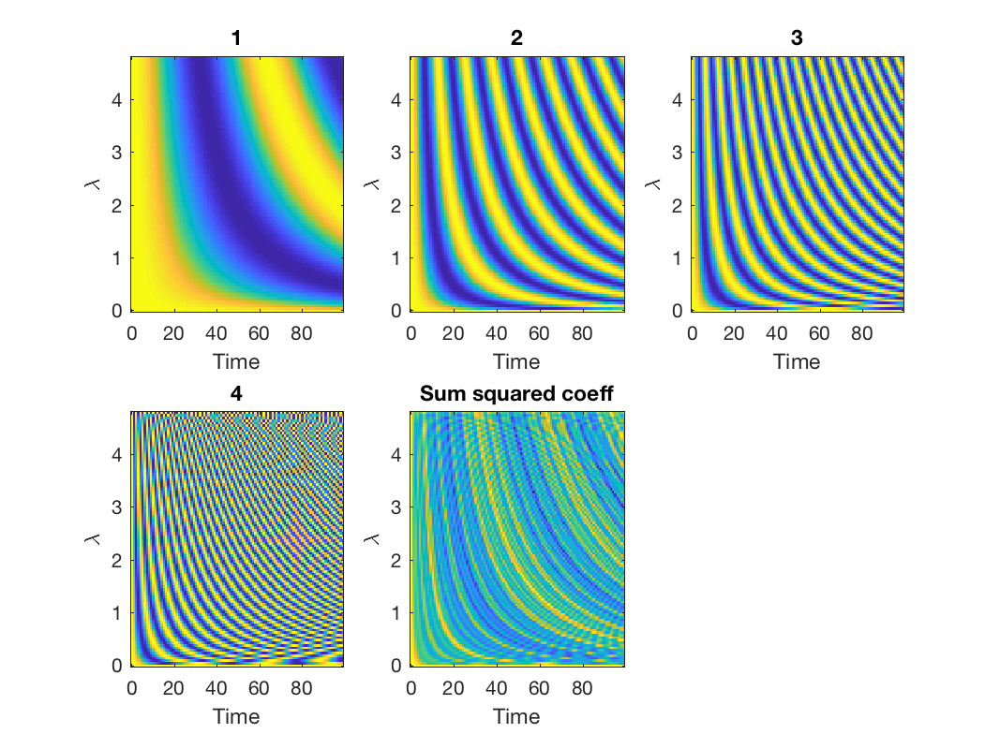
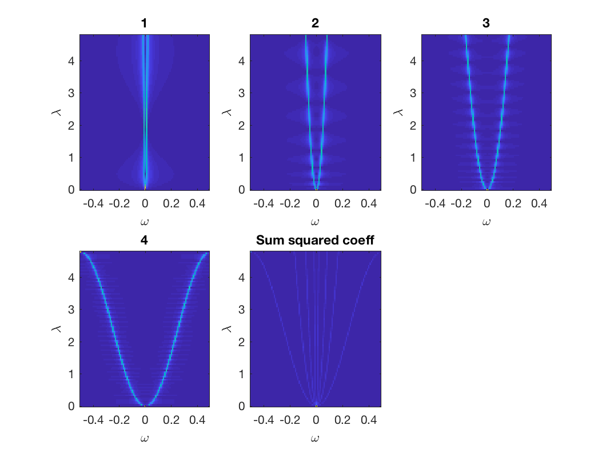

gsp_plot_jtv_filter(G,filters); gsp_plot_jtv_filter(G,filters,param);
| G | Time-Vertex graph structure |
| filters | Cell array of time-vertex filters |
| filtertype | Filter domain (ts,js,ts-array,js-array) |
| param | Structure of optional parameters |
non none
Example:
alpha = [0.1 0.5 1 2]; G = gsp_sensor(100); G = gsp_jtv_graph(G,100,1); G = gsp_estimate_lmax(G); [g, filtertype] = gsp_jtv_design_wave(G, alpha); param.domain='time-spectral'; gsp_plot_jtv_filter(G, g, filtertype,param); param.domain='joint-spectral'; gsp_plot_jtv_filter(G, g, filtertype,param); 